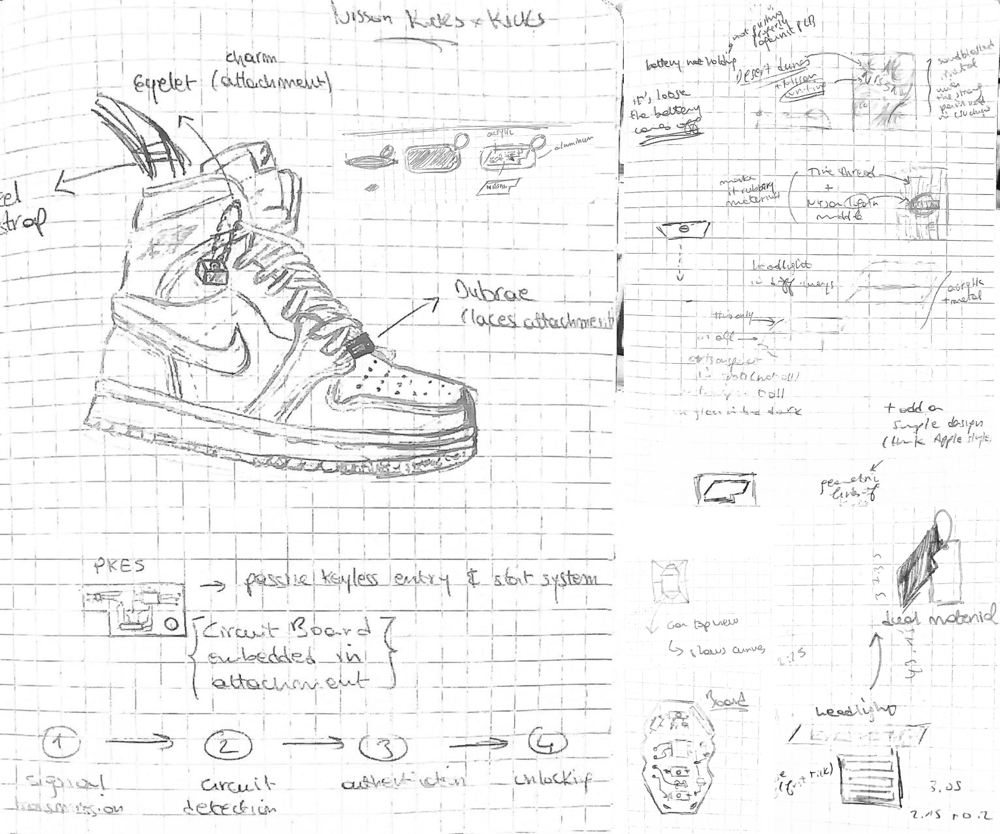
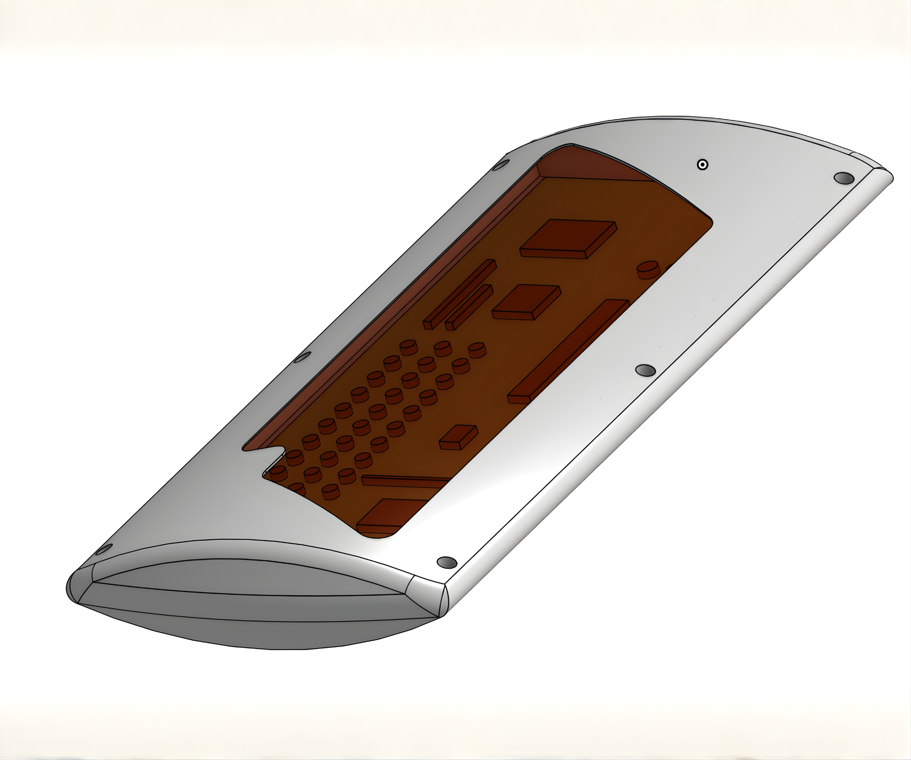
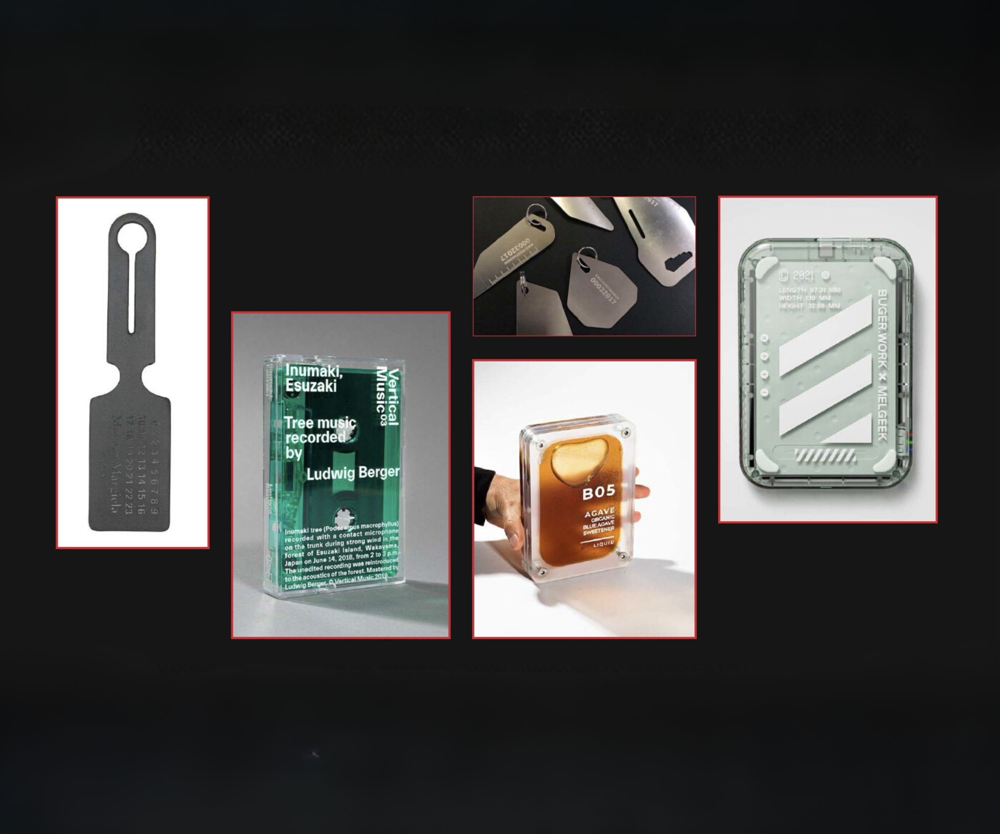
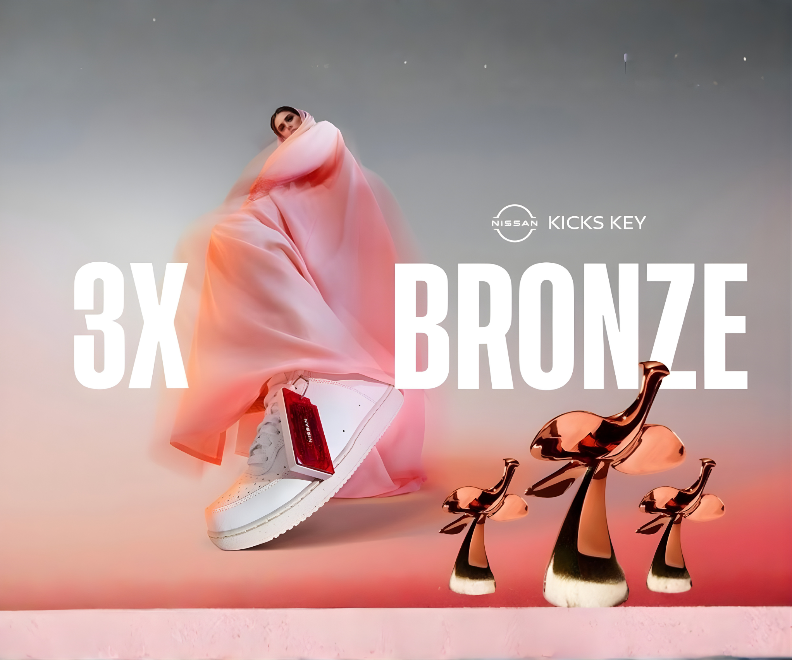

Kicks Key
A limited‑edition wearable key for the new Nissan Kicks merging automotive innovation with sneaker culture.

Overview
When Nissan launched the all‑new Nissan Kicks, they wanted to create more than just another car;
they
wanted to build a lifestyle connection.
The brief was simple yet challenging: design a key that speaks to the new generation of Kicks
drivers.
Through research and user insights, we discovered that the car’s audience leaned heavily toward
young,
urban, and trend‑aware individuals.
Combined with the fact that “Kicks” is slang for shoes, it became clear that the perfect
direction was
to make the car key an accessory for sneakers; a fusion of automotive innovation and streetwear
culture.
The Problem
Traditional car keys fail to connect emotionally with today’s youth audience. We needed a key
that:
- Expresses individuality and fashion culture.
- Reflects the new Kicks design language.
- Feels more like an accessory than a device.
Our goal was to bridge functionality and self‑expression, making the act of unlocking your car
feel
personal, stylish, and effortless.
Research & Insights
We started by examining the all‑new Nissan Kicks; its bold headlight design, sharp curves, and
new
grille and wheel geometry. Parallel to that, we conducted user and market studies based on
Nissan’s
audience data and global behavioral trends.
- The Kicks primarily appeals to a younger, fashion‑conscious audience.
- Sneaker culture is central to how this generation expresses identity.
- Vintage accessories are trending.
These insights drove our concept: a wearable car key that attaches to sneakers, making it both
functional and iconic.
Concept Development
Early hand sketches explored how car design elements; parts, body lines, and proportions could inspire the key’s form. We also experimented with different placements on sneakers: the front, tongue, heel, and eyelets. Each location offered a unique visual and ergonomic experience.
The eyelet position emerged as the most natural and balanced; visible, accessible, and seamlessly integrated into the sneaker silhouette.


Parallel to this, we built moodboards and material studies exploring see‑through acrylics, metallic finishes, and layered compositions that reveal the tech inside while maintaining a fashion‑forward aesthetic.

Prototyping & Engineering
After reverse‑engineering the internal PCB, we created accurate CAD models to define dimensional and assembly constraints. Through iterative 3D printing and FDM prototypes, we refined attachment points and material tolerances.
We also decided to make the key buttonless, not as a constraint from Nissan, but as a deliberate design choice. This made the form sleeker, minimal, and aligned with modern wearable aesthetics.
Each prototype was tested for comfort, durability, and fit across a variety of sneaker models before moving into material trials and final production engineering.


Final Product
The final Kicks Key blends translucent red acrylic with brushed aluminum framing, revealing the internal circuitry as a design feature rather than hiding it. Each limited‑edition key was individually numbered and packaged in a minimal frosted box, designed to feel more like a collector’s drop than a standard car accessory.


Launch & Impact
The Kicks Key debuted in the UAE as part of the all‑new Nissan Kicks launch. The first 50 customers who purchased the car online received the exclusive key, merging fashion, innovation, and mobility in one product experience.
The project was recognized with 3 Bronze Awards and 1 Craft Certificate at the Loeries, under the Industrial & Product Design category, marking a milestone in bringing design, culture, and engineering together under a single story.

Result
Problem: Car keys didn’t connect with the youth market.
Method: Combined data‑driven insights, sneaker culture research, and
engineering
precision to design a wearable car key.
Result: A collectible, buttonless, limited‑edition key that blurred the line
between
product design and fashion.
Credits: Developed at Digitas Middle East, in collaboration with Nissan and an
exceptional multidisciplinary team of designers, strategists, and engineers.